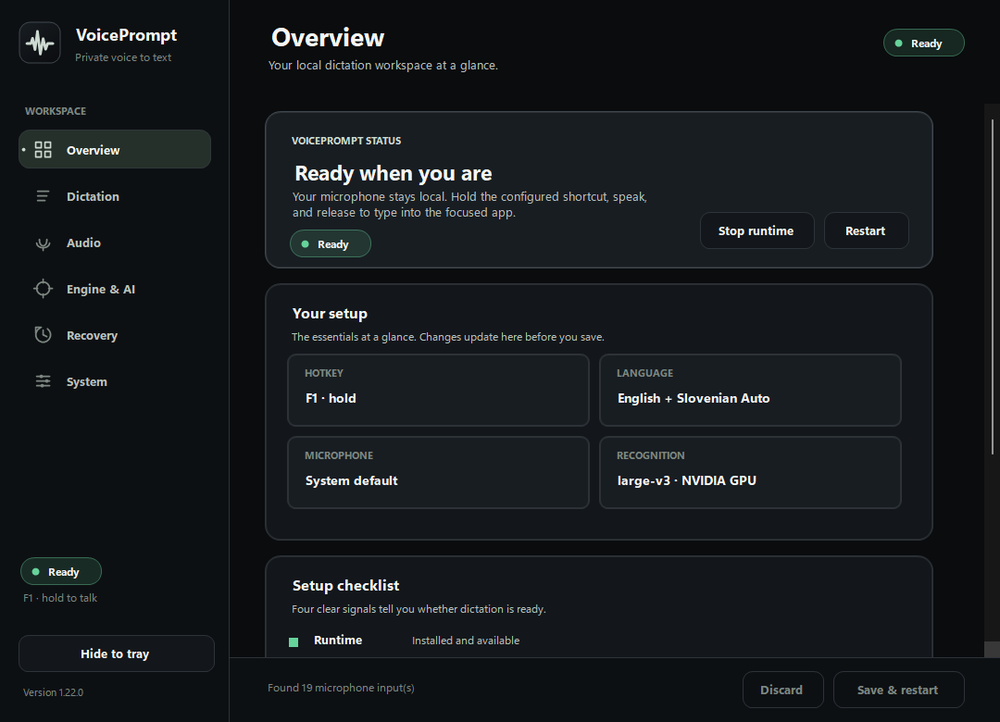
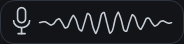

Hold
Use a single key or key combination in a browser, IDE, chat, document, or game.
Hold one key, say what you mean, and release. VoicePrompt recognizes any of Whisper's 100 languages, formats the result for the active app, and puts it where you are already working.
Free preview. No account, subscription, or payment.
English and Slovenian share a tuned automatic mode. Every other language is one searchable selection away. GitHub release mirror.


Actual hotkey overlayThe shortest path from thought to text
No recording window, transcript editor, or copy-and-paste routine. VoicePrompt works around your current app.
Use a single key or key combination in a browser, IDE, chat, document, or game.
A compact wave, equalizer, or microphone orb confirms the app is hearing you. Speak in any supported language.
Your complete text lands once by paste, or stays on the clipboard when an app blocks input.
Built for daily use
Search and pin any language supported by Whisper large-v3. English and Slovenian get evidence-preserving automatic routing by default, including a dedicated Slovenian slang profile.
Speech recognition runs on your GPU. Audio is never stored. Optional text cleanup and self-hosted server modes are explicit choices.
Complete speech blocks are prepared while you speak. The full recording remains available for automatic fallback, then VoicePrompt pastes once.
The application users actually download
These views come from the current Windows release. Six focused workspaces guide setup, dictation, audio, Engine & AI, recovery, and system tools.
A privacy model you can explain
The default path is microphone to local GPU to focused app. There is no account, analytics SDK, hidden upload, or saved recording.
Start in a few minutes
VoicePrompt installs its private Python environment, pinned speech runtime, tray interface, and Windows integration fixes. The multilingual model downloads once on first start.
powershell -ExecutionPolicy Bypass -File .\install.ps1Download and extract the latest release.
Open PowerShell in the extracted folder.
Run the command, then update future versions from inside VoicePrompt.
Less typing. More thinking.
Download VoicePrompt, choose from 100 languages, and keep your hands on the work that matters.